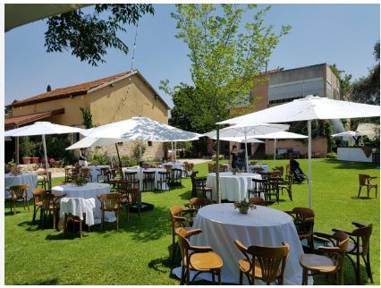
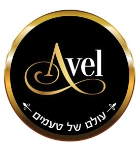
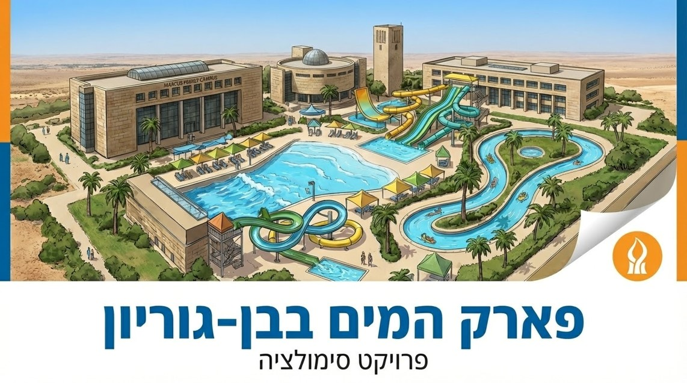

I am a third-year Industrial Engineering and Management student at Ben-Gurion University with a GPA of 88. I am a former commander in Unit 8200, with experience leading an operational team. I am highly responsible, professional, a fast learner, and a team player with a strong work ethic, capable of performing under pressure and attentive to details.
Reserve Service (Oct 2023 – Dec 2024): Served in a classified intelligence position during the "Iron Swords" war. Responsibilities included creative intelligence collection under strict deadlines, adapting quickly to changing mission demands, and demonstrating high responsibility, alertness, and out-of-the-box thinking.
Waitress at both private and corporate events. Managed service for large and diverse crowds in a family-owned winery and restaurant.
Worked in a private clinical research laboratory focused primarily on COVID-19 vaccine studies. Maintained ongoing collaboration with international research partners.
Current third-year student with a GPA of 88.
Full matriculation with honors. 5 units in Mathematics, English, Physics, and Arabic.

Developed a shift and inventory management system prototype to solve real-time synchronization gaps between the kitchen and hostess. Designed user-centric requirements based on information systems analysis and successfully engaged traditional management stakeholders.
View on GitHub
A responsive web application for wine discovery featuring a "Swipe Arena" and personal cellar management. Developed using HTML, CSS, and JS with a premium UI design.
Link to Website
Characterization and design of a Warehouse Management System (WMS) incorporating advanced picking logic and inventory management for dry food products.
View on GitHub
An advanced databases project involving data normalization, relational database modeling, and NoSQL based on tourism data in Sicily, Italy.
View on GitHub
An Event-Driven Simulation project analyzing wait times and customer satisfaction metrics to evaluate operational improvements for a waterpark.
View on GitHub